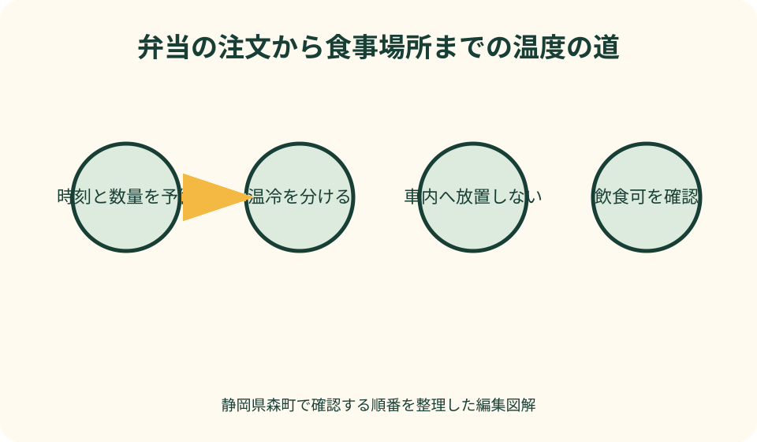
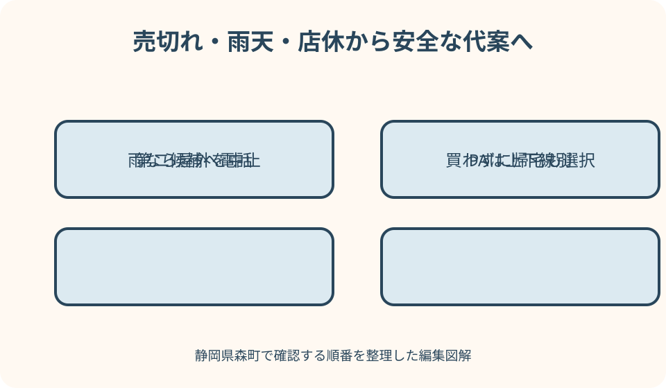

森町グルメ・テイクアウト｜最終確認 2026-08-10
静岡県森町のテイクアウト・弁当｜注文から保冷・ごみまでの持帰り案内
森町のテイクアウトは、店で商品を受け取れば終わりではありません。何人分をいつ注文し、何時に受け取り、どこで食べ、温度をどう保ち、ごみをどこへ持ち帰るかまでが一つの計画です。森町観光協会の飲食・和菓子情報、ことまち横丁、遠州森町PAは候補探しに使えますが、掲載商品、価格、持帰り対応を恒常保証するものではありません。また、公園や避難所の所在地が分かっても、飲食できる休憩場所とは限りません。本記事は施設管理者と店への確認を中心に、売切れ、雨、休業なら注文量を増やさず安全な代案へ変える手順をまとめます。

持帰りは商品より受取後の行動から決める
最初に、受取後すぐ食べるか、自宅へ運ぶか、屋外で食べるかを決めます。食べるまでの時間と移動方法が分からなければ、弁当、生菓子、冷蔵品のどれを安全に選べるか判断できません。
人数と一人分の量も、店へ電話する前に整理します。大人、幼児、高齢者で同じ一個を前提にせず、主食、主菜、取り分けの可否を確認します。余る前提で多めに注文しません。
観光帰りなら、店の位置を最後の立寄りにできるか地図で見ます。午前に受け取って宮川や町なかを長時間歩く計画は避け、帰宅または食事場所へ移る直前を候補にします。
受取から食事までを紙に書き、気温、雨、駐車、保冷剤、ごみ袋を含めます。どれか一つが準備できない場合は、常温で表示を確認できる品へ替えるか、店内飲食を検討します。
本記事は筆者が各店の商品を買って味を比較した記事ではありません。2026年8月10日に確認した森町、観光協会、横丁、NEXCO中日本の情報から、注文と持運びの確認方法を編集しています。
候補は観光協会・横丁・PAから店へ確認する
森町観光協会の飲食情報は、仕出しや料理店などの候補を知る入口になります。掲載文に持帰りや仕出しがあっても、希望日の個人向け弁当、数量、受取が可能とは限りません。店舗へ直接尋ねます。
特産品・お土産ページには茶や和菓子の事業者と商品例があります。和菓子がすべて長時間常温で運べるとは考えず、個包装、期限、温度、箱の傾け可否を商品ごとに確認します。
ことまち横丁には菓子、茶、軽食など複数の店舗が公式掲載されています。ただし横丁内で販売することと持帰り向け包装は同義ではありません。持歩き時間と保存方法を注文前に伝えます。
遠州森町PAは上下線で店舗と商品が異なります。NEXCO中日本の当事者公式で自分の進行方向、店舗、営業時間、ぷらっとパークを確認し、反対側の情報を使いません。
検索画面の写真や価格を注文根拠にせず、候補を一店ずつ絞ります。店の公式発信がなければ、観光協会の電話情報から直接確認し、返答が得られない時は別の確実な候補へ移ります。
事前注文は数量・受取・キャンセルを一組で伝える
電話では、受取日、希望時刻、商品、数量、名前、連絡先を復唱します。会議や法事など数が多い場合、注文締切と最少・最大数量を早めに聞き、前日で間に合うと決めつけません。
受取時刻は店が調理を終える目安と、自分が到着できる時間を合わせます。早く着けば受け取れる、遅れても保管されるとは考えず、前後する場合の連絡方法を確認します。
支払方法、領収書、袋、箸、おしぼり、分ける単位を注文時に聞きます。無料で付くと仮定せず、不要な備品は断ります。領収書の宛名は受取時に考え始めず事前に伝えます。
温かい料理と冷たい料理を一緒に入れるか、店の包装方法を確認します。自分で詰め替えると表示や衛生が分からなくなるため、配布先ごとの袋分けが可能か注文時に相談します。
人数変更や荒天があり得る集まりでは、キャンセル期限、数量変更、受取不能時の扱いを聞きます。注文後に連絡なしで取りに行かないことを避け、主催者と受取担当を分けすぎません。
受取時刻は食べ始めから逆算する
食事開始を決め、移動、配布、手洗い、席の準備を差し引いて受取時刻を選びます。正午に食べるのに朝一番で受け取るなど、保管時間を不必要に延ばしません。
複数店舗で受け取る場合、最初の商品が車内に残る時間が増えます。弁当、菓子、飲み物を別々に回収せず、一店または近い範囲へまとめ、冷蔵が必要な物を最後にします。
受取担当は、商品名、数量、アレルギー対応品の印、期限、保存方法を店頭で確認します。急いで車へ運んだ後に不足へ気付くことを避け、その場で注文票と照合します。
遅れそうな時は安全な場所から店へ連絡します。運転しながら電話せず、到着を急いで危険な運転をしません。保管できないと言われたら注文の扱いを相談します。
行事の開始が遅れた場合、食べ始めも同じだけ延ばせるとは限りません。店から示された期限と保存条件を優先し、安全性を確認できない食品は配布しません。
保冷と車内放置を別の問題として考える
保冷バッグへ入れたことだけで安全を保証できません。商品が求める温度、保冷剤の量、容器の大きさ、外気、移動時間を店へ伝え、具体的な保存表示に従います。
車内は短時間でも温度が変わります。日陰に停める、窓を少し開ける、エアコンを切った直後という条件を安全の根拠にせず、食品を置いたまま観光や買い物へ行きません。
温かい弁当と冷たい菓子を同じ保冷箱へ直接重ねると、互いの温度へ影響します。店の包装を保ち、袋や箱を分けます。保冷剤が食品容器を濡らさないようにもします。
冷蔵庫へ入れれば後で食べられると一律に判断しません。持帰り途中の温度履歴が不明なら、再冷蔵や再加熱で安全を回復できるとは限りません。店の案内と商品表示を基準にします。
受取後に予定が変わり、食べるまで長くなると分かった時は、先に帰宅するか食事場所へ移ります。観光を優先して保冷時間を延長せず、食べない判断も含めます。

公園で食べる可否は設備一覧から推測しない
森町の子育て向け公園一覧には、公園や施設の住所、駐車場、トイレなどが掲載されています。トイレやベンチがあることは、団体の弁当、飲酒、テーブル設置、長時間利用を許可する表示ではありません。
利用前に、公園名、管理者、開園時間、飲食、敷物、火気、団体利用、行事による制限を確認します。火を使わない弁当でも飲食禁止の区域があり得るため、現地看板を最終確認にします。
太田川親水公園など水辺の名称から、いつでも安全に食べられるとは判断しません。雨量、増水、地面のぬかるみ、風、日陰の有無を見て、河川へ近づかない撤退条件を持ちます。
学校、文化施設、避難所の敷地を、公的施設だから自由に食べられる場所と考えません。通常利用の許可が必要な施設もあり、防災上の指定は観光客の休憩許可ではありません。
場所の許可が確認できない時は、車内で食べることへ自動的に切り替えません。安全に駐車し、エンジン、換気、子どもの姿勢、ごみを管理できるかを見て、難しければ店内または帰宅後にします。
防災情報は食事場所選びの安全確認にだけ使う
森町のハザードマップは、洪水や土砂災害などの危険と避難関係施設を確認する資料です。景色のよい弁当場所を探す地図ではありません。出発前に天候と予定地周辺の危険を確認するために使います。
町指定避難所や防災ヘリポートの一覧に公園名があっても、平時の飲食利用を保証しません。災害時には防災活動が最優先です。避難情報が出たら食事を中止し、町の案内に従います。
大雨、台風、地震後は、店が営業していても移動経路が安全とは限りません。河川沿い、山間部、橋、斜面を確認し、弁当受取のために警報や通行規制の区域へ向かいません。
クーリングシェルターも、指定場所で暑さを避ける制度であり、弁当を広げる飲食スペースとは限りません。利用日時と場所の案内に従い、食品保管の代わりにしません。
安全確認で問題がある日は、注文のキャンセル条件を店へ相談し、自宅近くの食事へ変更します。既に受け取った食品を持って避難する場合も、命を守る行動を優先します。
ごみは購入先と食事場所の双方のルールを守る
持帰り容器を店のごみ箱へ後から戻せるとは限りません。購入時に回収の有無を尋ね、食事場所のごみ箱も持込みごみ不可の場合があります。基本は密閉して自宅へ持ち帰る準備をします。
汁、串、割り箸、保冷剤、食品残りを分けられる袋を用意します。液体を公園の地面や排水へ流さず、臭いや鳥獣を招かないよう袋の口を閉じます。
子どもが食べ終えた容器をベンチへ置いたまま遊ばないよう、大人がすぐまとめます。風のある日は軽いふたや紙が飛びやすいため、開封前から袋を固定します。
車内でごみを保管する場合、食べ物と同じ保冷箱へ戻しません。液漏れしない容器へ入れ、運転席の足元や視界を妨げない場所へ固定します。
大人数の弁当では、ごみ担当と回収時刻を決めます。参加者ごとに任せて公園や会議室へ残さず、最後に席、駐車場所、トイレ周辺を確認します。
子連れは熱さ・串・誤嚥と食べる姿勢を確認する
子ども用と書かれていない弁当を、量が少ないだけで幼児向けと考えません。食材の硬さ、大きさ、骨、串、熱さ、辛さを店へ尋ね、保護者が開封後にも確認します。
車が動いている間に食べさせると、急ブレーキや誤嚥への対応が難しくなります。安全に駐車し、子どもが安定した姿勢で座れる場所を選びます。歩きながら串物を渡しません。
離乳食の持参と市販弁当の取り分けを混ぜず、年齢に合ういつもの食事を準備します。温めや湯を店・公園で使えると仮定せず、必要な条件を自宅で整えます。
公園遊びを先にすると、汗や土が手に付いています。食事前に手洗いできる場所を確認し、水道が飲用可能とは推測しません。石けんや手拭きを必要に応じて持ちます。
眠気、暑さ、機嫌の悪化があれば、屋外食を続けません。未開封品の保存条件を見て帰宅するか、安全に食べられない場合は廃棄します。予定を完了させるために無理に食べさせません。
アレルギー対応品は受取時の識別まで確認する
注文時には対象のアレルゲンを料理名ではなく材料で伝えます。衣、たれ、出汁、調味料、飾り、同じ油や器具の使用を確認し、店が対応できない場合は注文しません。
複数人分を受け取る時、対応品がどの容器か、店の印や名前で識別できるよう相談します。家庭でふたを開けて見比べると混入や取り違えが起きるため、包装状態で判別します。
受取担当と食事を配る担当が違うなら、対応品の名前、置き場所、配布順を引き継ぎます。一般品の上へ重ねず、同じトングや箸を使いません。
和菓子や密封品も、表示があるから全工程の混入がないとは限りません。注意書きと製造者情報を読み、必要なら店舗へ確認します。表示のないばら売り品を推測で選びません。
症状が出た場合の薬と連絡先をすぐ出せるようにします。公園や山間部で救急到着に時間がかかる可能性も考え、主治医の指示に沿い、無理な屋外食を避けます。
売切れ・雨天・店休は同じ地域で一度だけ切り替える
売切れを店頭で知ったら、数量を減らせる代替商品があるか尋ねます。別商品でもアレルゲン、保存、受取時間を確認し、空腹を理由に表示不明な食品を急いで買いません。
店休なら、駐車場で複数の店を検索し続けず、同じ地域の第二候補へ電話します。確認できなければ、ことまち横丁、進行方向に合うPA、帰宅後の食事のいずれか一つへ変えます。
雨天で公園食が難しい場合、屋根のある公共施設へ無断で移動しません。施設の飲食可否を確認できなければ、持帰り可能時間内に帰宅するか、店内飲食へ変更します。
PAを使う時は上り・下りとぷらっとパークを確認します。一般道から入れる時間、駐車、店舗営業が合わなければ、閉門間際に向かわず別案へ移ります。
代案が重なって受取から長時間経った場合、最初の商品を食べる前に保存条件を再確認します。新しい食品を買い足すことで古い食品の安全性は変わりません。

良い点：食事時刻と場所を自分たちで調整できる
テイクアウトの良い点は、店内滞在を短くし、自宅や許可された場所で食事時刻を調整できることです。この利点は、受取時刻、温度、食べる場所が事前に決まっている場合に成り立ちます。
子連れや大人数では、席を全員分確保せずに済む場合があります。一方、屋外の手洗い、姿勢、天候、ごみ管理を自分たちで担います。店内より簡単とは一律に言えません。
観光協会、横丁、PAなど複数の公式入口があり、町なか、門前、移動中から候補を探せます。地域を横断して買い集めず、予定経路に近い一か所を選べる点が実用的です。
弁当だけでなく、茶や和菓子を別の時間に楽しめることも持帰りの特徴です。ただし、保存期限と消費量を確認し、食事に加えて菓子を大量に買う理由にはしません。
事前注文が可能なら、店と受取側の双方が数量を準備しやすくなります。対応できる店・商品・日程は異なるため、予約できた経験を次回の保証にせず毎回確認します。
注文したい点：持帰り条件と食事場所の確認先を結びたい
飲食案内に、持帰り可、要予約、数量相談、仕出し、当日販売を更新日付きで分けると、店への問い合わせが具体的になります。商品と価格は変わるため、最終確認先を目立たせたいです。
店舗ごとに、注文締切、受取場所、駐車、アレルギー相談、温冷包装、容器回収の有無が分かると、大人数の利用にも役立ちます。不明項目は推測せず要問い合わせと表示できます。
公園一覧には、管理者、開園、飲食、団体利用、火気、ごみ、行事予約の確認方法があると便利です。トイレや駐車場の有無と、飲食許可を別の欄にすることが重要です。
防災地図と観光地図の役割を分け、河川増水や土砂災害の恐れがある日は屋外食を中止する案内へつなげたいところです。避難施設を休憩施設と誤認させない表示も必要です。
横丁とPAでは、各店の持帰り可否、受取後の保存、一般道利用、上下線を当事者公式で確認できる導線が役立ちます。売切れや臨時変更は当日表示を優先します。
代案・結論：受取・温度・場所・ごみを四点確認する
前日は、商品と数量、受取時刻、保存、アレルゲン、支払、変更条件を店へ確認します。食べる場所の管理者ルールと天候を見て、保冷バッグ、ごみ袋、手洗い用品を準備します。
受取時には、数量、対応品の印、期限、温度、箸や領収書を照合します。冷たい品を最後に受け取り、車へ積んだ後は食事場所または帰宅先へ直接向かいます。
食事場所では、飲食可の表示、地面、水辺、風、日陰、手洗いを確認します。ルールが分からない、雨が強い、子どもが疲れた場合は、屋外で開封せず帰宅へ切り替えます。
食後は容器、汁、串、保冷剤を分けて持ち帰り、忘れ物と周囲を確認します。公園や店へごみを置かず、車内で液漏れしない場所へ固定します。
結論は、森町のテイクアウトを購入だけで完成させないことです。受取、温度、食べる場所、ごみの四点を確認できる商品だけを選び、どれかが欠ければ別案または購入なしにします。
大石の視点：家族の集まりは配布表まで残す
私（大石）は、家族の弁当手配では、料理の豪華さより、誰が受け取り、誰へ配り、余りをどう扱うかを先に決めます。幹事一人へ注文、運転、ごみを集中させません。
記録には、注文日、店の連絡先、商品、数量、受取担当、支払、アレルギー対応品の識別、保存、食事場所の許可、ごみ担当を書きます。次回は価格や対応を必ず再確認します。
法事や自治会など人数が変わる集まりでは、名簿と注文数を一人で抱えず、締切前に家族や担当者が二重確認します。欠席分を別の人へ無理に配らず、店と安全な扱いを相談します。
実家や空き家の片付け日に弁当を取る場合、室内の水道、冷蔵庫、換気が使えると仮定しません。作業前に設備を確認し、道路や駐車を塞がず、食品を残置しない計画にします。
この記事の情報確認日は2026年8月10日です。商品、価格、営業、持帰り対応、公園利用、PAは変更される場合があります。注文日には店と施設管理者の案内を再確認し、警報や極端な暑さがあれば屋外食を中止してください。
公式情報・確認先
掲載内容は次の一次情報を基礎に整理しました。営業、料金、催し、交通は変わるため、出発前または手続き前にリンク先で最新情報を確認してください。
- 観光（静岡県森町、2026-08-10確認）
- おでかけ（静岡県森町、2026-08-10確認）
- 森町防災ハザードマップ（静岡県森町、2026-08-10確認）
- 町指定避難所等について（静岡県森町、2026-08-10確認）
- 特産品・お土産（森町観光協会、2026-08-10確認）
- 魚伊（森町観光協会、2026-08-10確認）
- 小國ことまち横丁（小國ことまち横丁、2026-08-10確認）
- 遠州森町PA 上り 施設・サービス案内（NEXCO中日本、2026-08-10確認）
- 遠州森町PA 下り 施設・サービス案内（NEXCO中日本、2026-08-10確認）